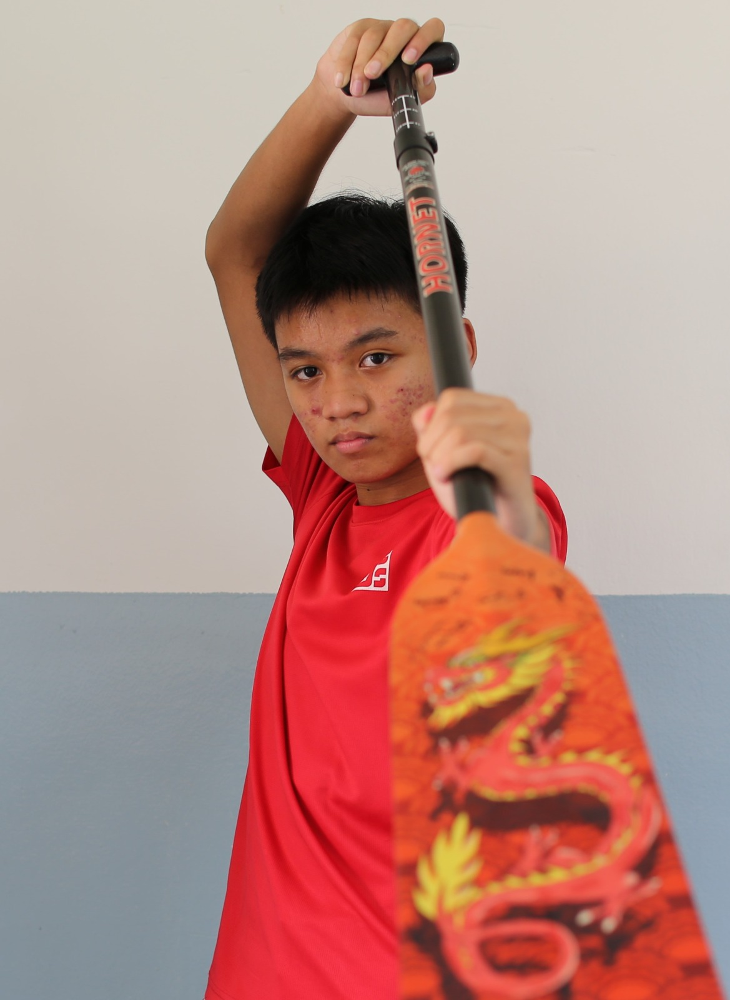

Hello! My name is Fitri,
previously from Pioneer
Primary School and Jurong Secondary
School. I have been in 3 CCAs so far,
most notably robotics in primary school, as well as volleyball and dragonboat in secondary school. I am
now in SP canoe sprint.
My personality type is INFJ-A, which just basically means that I prioritise being compassionate and
empathising towards others. I also strongly hold the value of loyalty.
Some of my interests include water sports in general and chess. I am also interested in volleyball and
often
play it with friends over the holidays and weekend, and my favorite subjects in Secondary School were
A Math and Pure History.
This is my website!